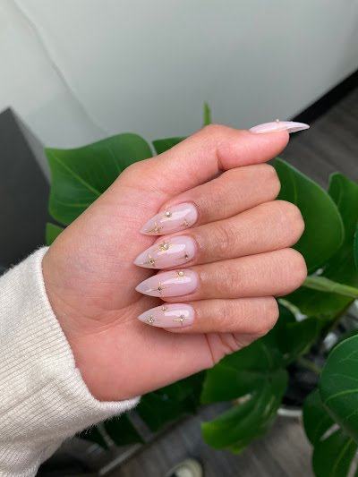
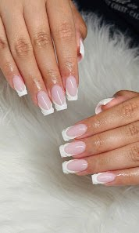
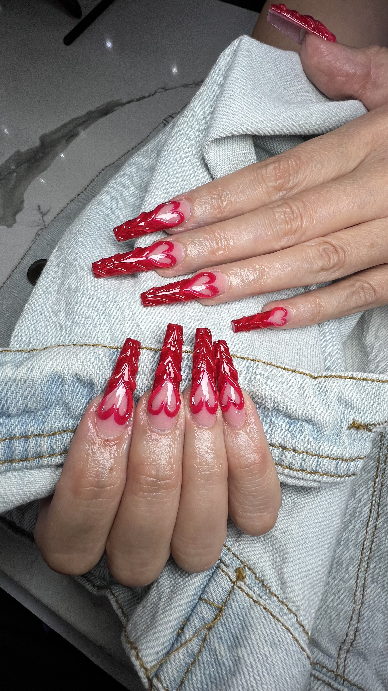

Nail Care FAQ
Clear answers to common manicure and enhancement questions.
A short reference page for clients comparing services, troubleshooting wear, and understanding how to care for nails between appointments.

Answers
Service questions clients ask most often.
Why does my gel manicure peel?
Gel manicures can peel when the natural nail still has oil or moisture on it, the prep is rushed, the product is applied too thickly, or the edges are not sealed cleanly.
Peeling can also happen if nails are used as tools or soaked repeatedly in water right after the service.
Builder gel vs Gel-X
Builder gel is best when you want added strength and structure on the natural nail. Gel-X is best when you want added length with a lightweight extension system.
The right choice depends on whether your priority is support, length, or both.
How long does Gel-X last?
Gel-X wear time depends on nail growth, maintenance, and daily habits, but many clients expect around two to three weeks of clean wear before a refresh or removal.
Does Russian manicure damage nails?
A Russian manicure should not damage the nail when it is performed with careful technique, controlled pressure, and proper sanitation.
Damage is more often linked to over-filing, rushed prep, or improper removal of product.
How do you remove gel polish safely?
Safe gel polish removal usually means gently breaking the seal, soaking with acetone, and easing product away without force.
Picking or peeling gel off at home can remove layers from the natural nail.
Why do nails lift after acrylic?
Lifting can happen because of moisture, oil, incomplete prep, product touching the skin, impact to the nail, or normal regrowth.
Once lifting starts, it should be addressed early so moisture does not collect underneath.
Related Services
Explore the services behind these questions.

Russian Manicure
Detail-led prep for a cleaner cuticle line and more polished finish.

Builder Gel
Support, structure, and a smoother natural-looking silhouette.
Gel-X Extensions
Lightweight length with a cleaner, more modern extension feel.
Need A Better Answer For Your Nails?
Book the right service, then ask in person.
Service choice, wear time, and maintenance all depend on nail condition, lifestyle, and the finish you want.